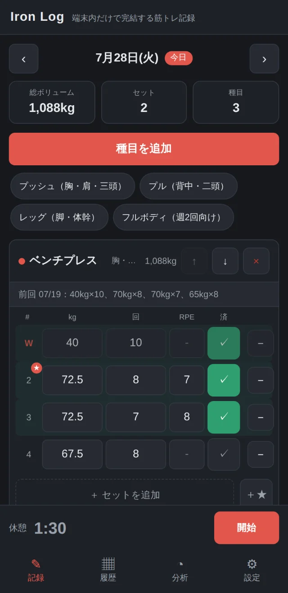
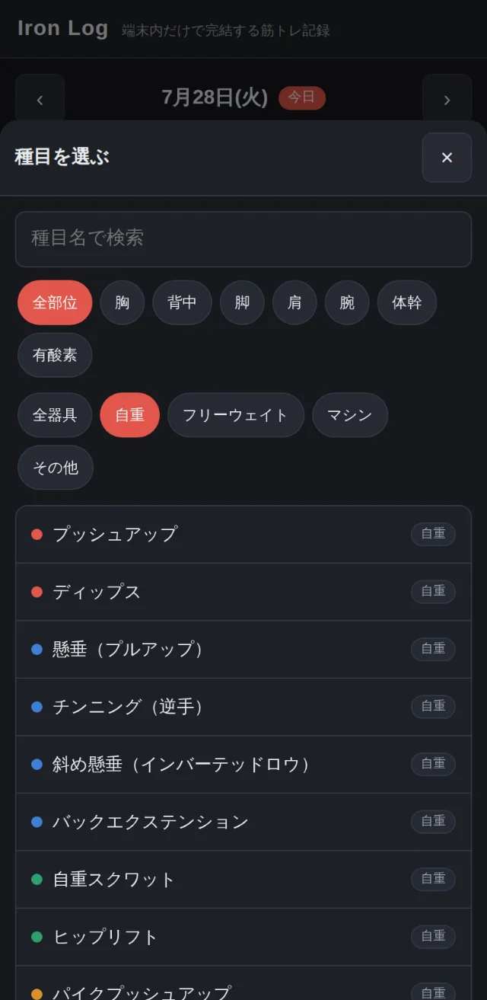
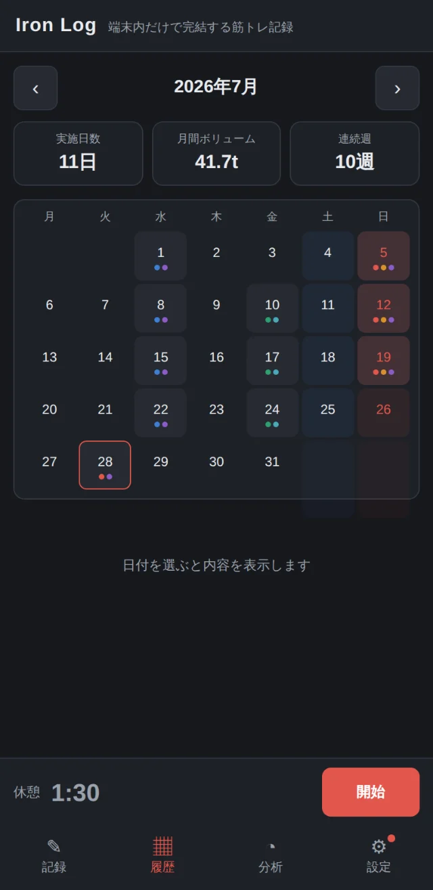
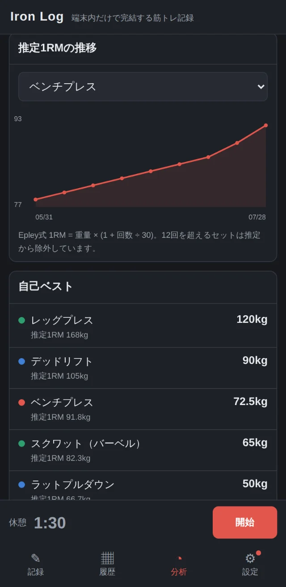
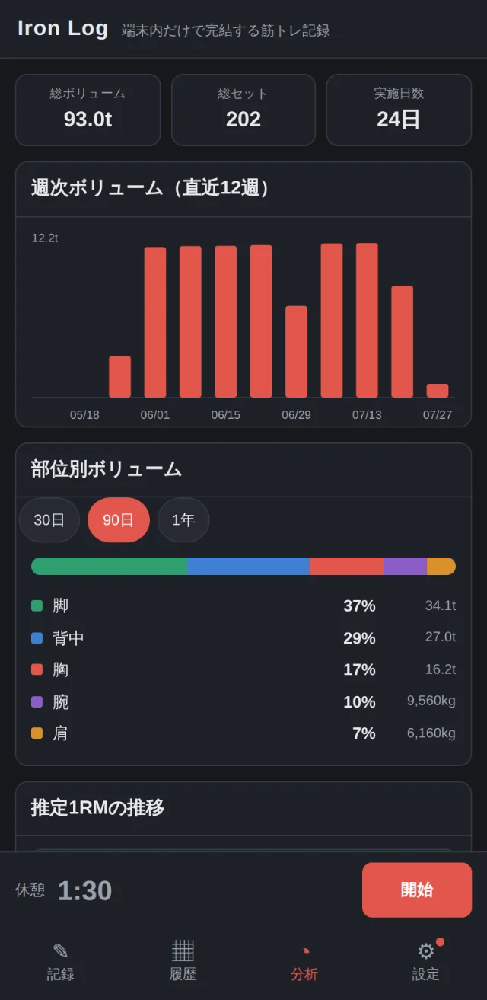
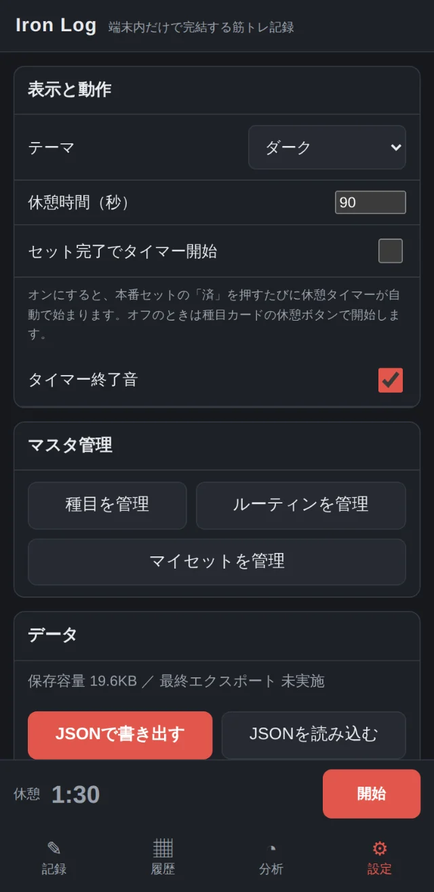

記録
前回の重量が、入力欄のすぐ上にある
種目を追加すると、前回の本番セットが初期値として入ります。 その場で直して「済」を押すだけで1セット終わります。 自己ベストを更新したセットには印が付きます。 保存ボタンはありません。入力した時点で残ります。
実際の画面
以下はすべて動作中のアプリの画面です。数字はデモ用の記録で、加工はしていません。

記録
種目を追加すると、前回の本番セットが初期値として入ります。 その場で直して「済」を押すだけで1セット終わります。 自己ベストを更新したセットには印が付きます。 保存ボタンはありません。入力した時点で残ります。

種目を選ぶ
57種目を用意しています。部位（胸・背中・脚・肩・腕・体幹・有酸素）とは別に、 器具（自重・フリーウェイト・マシン・その他）の軸を持たせました。 自重スクワットとバーベルスクワットが一覧で混ざらないようにするためです。 足りない種目は自分で追加できます。

履歴
カレンダーの実施日には、その日に含まれる部位の色が付きます。 脚だけ空いている、といった偏りがそのまま見えます。 日付を選ぶと、その日の種目とセット内容を開けます。

分析
推定1RMの推移、週次ボリューム、部位別の構成比、自己ベストを見られます。 推定にはEpley式を使い、計算式そのものを画面に書いています。 12回を超えるセットは推定から外しています。式の当てはまりが悪くなるためです。

分析
グラフ描画のライブラリは使っていません。SVGを自前で組み立てています。 外部から読み込むものが1つも無い状態を保つためです。 記録が0件のときは、空の目盛りではなく「データがありません」と出します。

設定
端末の中だけに置くということは、端末から消えたら戻らないということです。 そこで、書き出していない記録が溜まると、設定タブに印を付けて日数とともに知らせます。 記録を始めた時点で、ブラウザに永続化も要求します。 全記録はJSONで書き出せます。機種を変えるときは、書き出して新しい端末で読み込むだけです。
データの扱い
解析ツール、広告、フォント、CDN、クラッシュ報告を含め、外部ドメインへのリクエストを一切行いません。 自動検証を回すたびに、外部あてのリクエストが0件であることを確認しています。 機内モードのままでも、通常どおり動きます。
つくりの方針
セットの合間に操作するものなので、以下を仕様より上位の判断基準にしています。 仕様がこれに反するときは、仕様のほうを直しています。
よくある質問
無料です。有料版も、上限も、広告もありません。将来にわたって課金を入れる予定はありません。
要りません。ブラウザで開けば使えます。ホーム画面に追加すると、アプリのように全画面で開き、圏外でも起動します。
設定画面からJSONで書き出し、新しい端末で読み込みます。読み込むときに、置き換えるか既存に追加するかを選べます。
あります。ブラウザのデータを消したとき、プライベートブラウズで使っていたとき、端末の空き容量が減ってブラウザに追い出されたときです。iPhoneでは、しばらく開かない期間が続くと自動で消されることもあります。対策として、記録を始めた時点でブラウザに永続化を要求し、書き出していない記録が溜まると設定タブに印を出します。ホーム画面に追加しておくと、自動削除の対象から外れます。それでも消えない保証はできないので、月に1回の書き出しをおすすめします。
使えます。画面幅320px以上に対応しています。ただし入力はスマートフォンでの片手操作を前提に組んでいます。
できません。kg固定です。表示だけを切り替えると保存してある値と単位が食い違い、過去の記録の読み方を誤らせるためです。換算まで含めて対応できるまでは出しません。
Safari 16以降、Chrome・Firefox・Edge は110以降です。